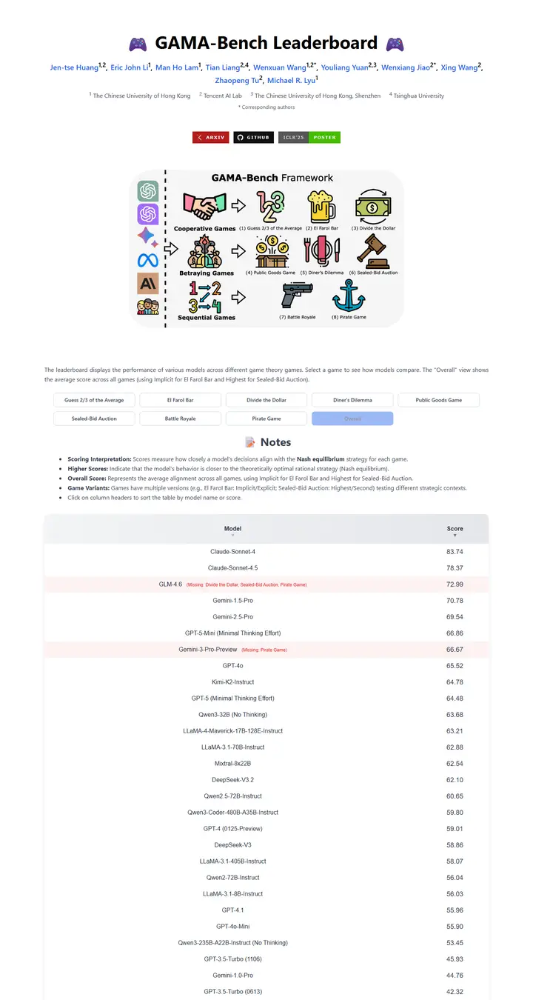
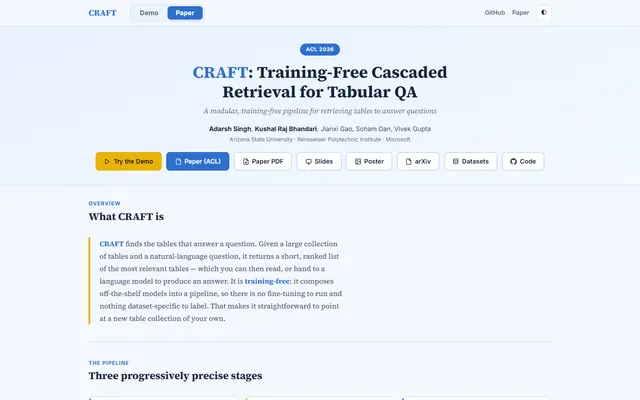
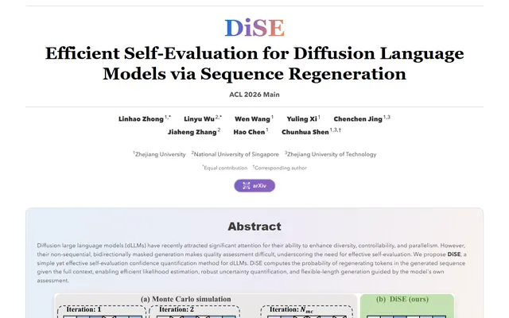
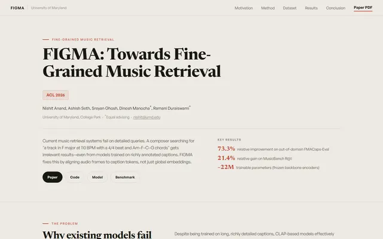
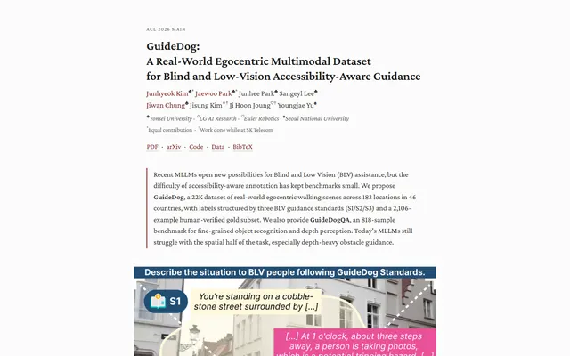
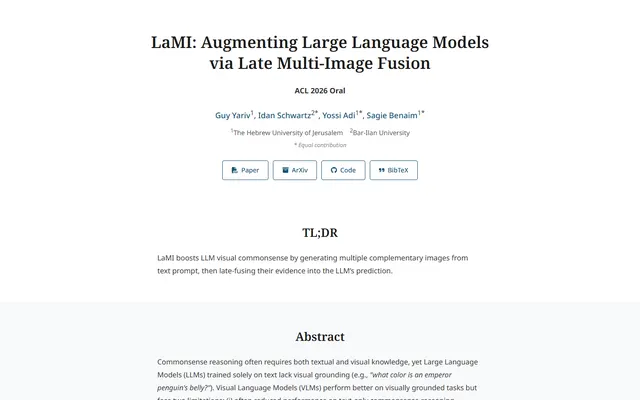
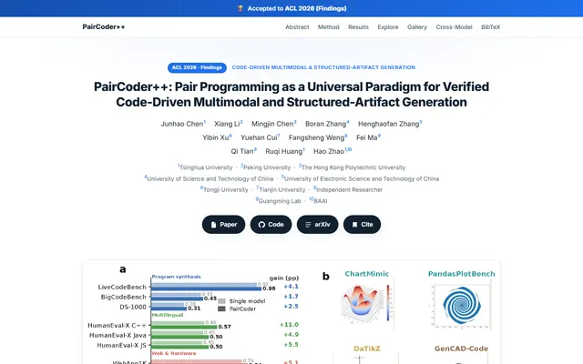

How Far Are We on the Decision-Making of LLMs? Evaluating LLMs' Gaming Ability in Multi-Agent Environments
A game-night scoreboard taped to a white wall, with two purple controllers flanking a bold system-font title, a strip of shields.io stickers and one blue "Overall" tab lit up.

Checked against the rendered page. The Vite starter CSS is left in place, so link and tab hovers turn #747bff/#646cff, borders without a style draw nothing, the BibTeX block overhangs its wrapper by 32px, and below about 930px the page scrolls sideways instead of shrinking.
Why it is here
Added on the maintainer's suggestion rather than through the design rounds. The page is a working leaderboard: a bold system-font title flanked by game-controller emoji, a row of shields.io badges, a framework diagram, then game tabs over a sortable score table.
Overview
Color Palette
Typography
Spacing & Shape
Page Modules
Guidelines
More like this





